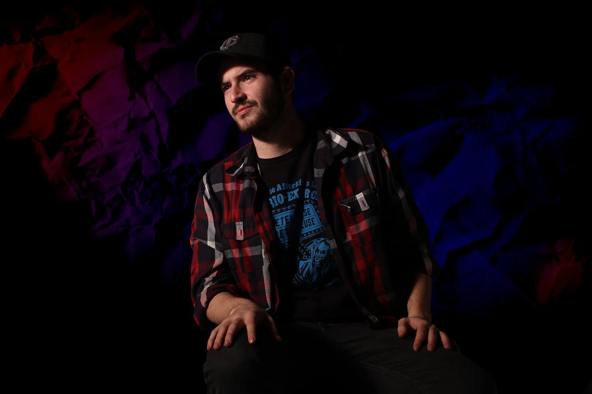

About
Nick Larner was born in Chicago, but has spent the majority of his life in Saint Paul, MN. Born of two traveling artists, from a young age he took heavy interest in creative arts and even more so film. While the majority of his work is in the video industry, he is also in the process of writing a book of short stories and poems.
“My favorite thing to do on this planet is create stuff. Whether that means making art, writing stories or producing videos, it all comes back to doing something that I love.”